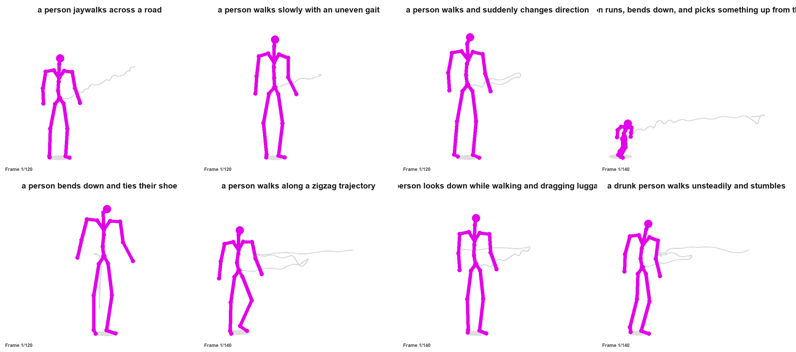

01 / 08Crossing
Jaywalking
“a person jaywalks across a road”
Language-guided generation of pedestrian motions with prompt enrichment, diffusion-based synthesis, and parameter-efficient domain adaptation.

01 / OVERVIEW
PedMotion explores natural-language-driven pedestrian motion synthesis for simulation-oriented scenario development. It combines language-based prompt enrichment, motion generation using diffusion models, and pedestrian-domain adaptation.
The project considers general motion-language datasets HumanML3D and KIT-ML, alongside the pedestrian-focused Walk-the-Talk dataset. The gallery below presents the motion examples included in the supplied project assets.
02 / APPROACH
High-level overview of the pipeline described in the PedMotion manuscript.
Natural-language description of pedestrian behaviour
LLM-guided refinement of the textual condition
Transformer-based diffusion with domain adaptation
Sequence visualizations in skeleton and SMPL formats
Conceptual overview · For mathematical and implementation details, refer to the manuscript.
03 / REPORTED RESULTS
Selected figures from the manuscript's reported baseline comparisons; these should not be interpreted as a full-pipeline ablation.
FID ↓ Lower is better
FID ↓ Lower is better
Motion diversity ↑ Higher measured spread
Values are reproduced from the manuscript figures discussed in the revision. FID and diversity measure different properties; greater diversity alone does not establish greater realism or overall quality.
04 / MOTION GALLERY
Eight prompt-driven examples. Skeleton sequences are shown beside the available corresponding SMPL visualizations. Animated GIFs play automatically.
“a person jaywalks across a road”
“a person walks slowly with an uneven gait”
“a person walks and suddenly changes direction”
“a person runs, bends down and picks something up from the road”
“a person bends down and ties their shoe”
“a person walks along a zigzag trajectory”
“a person looks down while walking and dragging luggage”
“a drunk person walks unsteadily and stumbles”
The “roadside pickup” demo includes a skeleton animation only because a paired SMPL GIF was not included in the supplied archive. Scene objects mentioned in prompts are descriptive context and may not be rendered in the motion outputs.
05 / RESOURCES
Publish this folder with GitHub Pages to share an interactive research showcase. Add your paper and source repository links when they are publicly available.